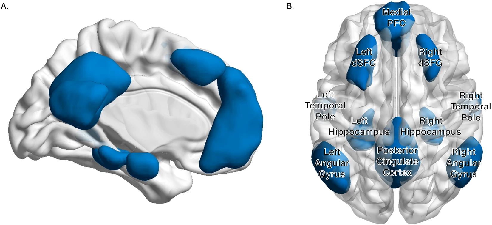

This week’s reads focus on how connectivity may shape tau pathology across cortical and subcortical systems in Alzheimer’s disease. Seed-based functional connectivity from the entorhinal cortex and basal forebrain was linked to cortical tau burden, while thalamo-cortical tractography revealed structural and effective-connectivity disruptions in amnestic MCI. At a much finer scale, post-mortem analysis of the anterodorsal thalamic nucleus showed strikingly early and cell-type-selective pTau pathology within the Papez circuit, challenging a simple cortex-to-thalamus spreading model. Meanwhile, multimodal ADNI analyses suggested that amyloid-associated hyperconnectivity to tau epicenters may partly mediate subsequent tau accumulation across connected cortical regions. Together with emerging work on locus coeruleus pathways, these studies highlight both the promise and the difficulty of linking large-scale network connectivity to the microscopic mechanisms of tau propagation.
Basal forebrain and entorhinal cortex functional connectivity predicts regional tau burden in cognitively normal older adults
Chadwick et al., Alzheimer’s & Dementia (2026) 10.1002/alz70856_105952
Summary
ERC and BF (Ch4) are both known as early tau deposition regions. This paper used ERC and BF as two seeds to build seed-to-voxel functional connectivity (FC) maps, and examined how well these FC patterns predict tau deposition across the cortex.
They found:
- Regions functionally connected to either seed (ERC or BF) showed higher tau-PET signal than regions outside the corresponding FC network.
- Across cortical voxels, stronger seed–cortex FC was associated with a stronger relationship between seed tau and cortical tau.
- Both seeds showed this pattern, but ERC provided stronger evidence for FC-related tau spread than BF.
Personal highlights
- They introduced the idea of network ROIs and outside-network ROIs. The outside-network ROI was defined as: outside-network ROI = gray matter mask − target seed FC network
- Figure 2 no longer treats the FC network as a binary in-network/out-of-network classification. Instead, it compares two voxel-wise quantities:
- seed–cortex FC strength
- seed tau–cortical tau association strength from voxel-wise regression
Comment
I was excited because I thought I had finally found a study combining connectivity, a subcortical region, and tau-PET at the same time. However, the subcortical component is still quite limited: BF/Ch4 is used mainly as a seed to explain cortical tau distribution, rather than to study tau propagation within or across subcortical regions. But I’ll keep FC ****as a possible mechanism or predictor of tau spatial distribution in mind.
And this is just a conference report….damn!!
Disrupted Thalamus White Matter Anatomy and Posterior Default Mode Network Effective Connectivity in Amnestic Mild Cognitive Impairment
Alderson et al., Frontiers in Aging Neuroscience (2017) 10.3389/fnagi.2017.00370
Summary
Alzheimer’s disease (AD) and its prodromal state amnestic mild cognitive impairment (aMCI) are characterized by widespread abnormalities in inter-areal white matter fiber pathways and parallel disruption of default mode network (DMN) resting state functional and effective connectivity.
This study used constrained spherical deconvolution (CSD) tractography to study WM integrity changes between thalamus and DMN.
They found:
- Significant structural abnormalities in thalamo-PCC and thalamo-IPL white-matter pathways in the aMCI group.
- A pronounced reduction in left thalamus → left IPL effective connectivity, accompanied by significant structural impairment of the corresponding thalamo-IPL pathway.
- Thalamo-cortical white-matter integrity was also associated with memory performance in aMCI subjects
New knowledge
- New term: default mode network (DMN). In this paper, the DMN includes the medial prefrontal cortex (mPFC), middle temporal gyrus (MTG), lateral inferior parietal lobes (IPL), PCC, and hippocampal regions.

Personal highlights
- The paper estimates effective connectivity (EC), which attempts to quantify the directional influence of one brain region on another, rather than simply measuring correlation as in functional connectivity.
- The motivation for using EC comes from the idea that the thalamus participates in thalamo-cortico-thalamic circuits and may modulate distributed cortical networks. Therefore, the authors asked whether structural impairment of thalamo-cortical pathways is accompanied by abnormal directional interactions with DMN regions.
Early and selective subcortical Tau pathology within the human Papez circuit
Sárkány et al., bioRxiv (2023) 10.1101/2023.06.05.543738
Summary
The Papez circuit is a compelling candidate while studying the disorientation in dementia because it comprises several interconnected cortical and subcortical areas, In this study, they detect pTau at subcellular level in postmortem tissue.
They found:
- The anterodorsal thalamic nucleus (ADn) shows unusually early and strong pTau vulnerability.
- The pathology is highly selective in both anatomical location and cell type.
- At the subcellular level, pTau was found in cell bodies, dendrites, myelinated axons, and presynaptic terminals. Importantly, pTau preferentially occurred in large vGLUT2+ mammillothalamic terminals, whereas the small corticothalamic terminals largely lacked pTau.
- Surprisingly, they did NOT find evidence supporting a simple cortex → thalamus propagation route. Even when cortical regions were already affected, corticothalamic boutons in ADn remained pTau-negative. Instead, the pattern was more consistent with selective propagation through the mammillary body–ADn pathway.
Personal highlights
- This work directly performs pTau staining, cell counting, and ultrastructural analysis in individual thalamic nuclei, rather than inferring pathology from MRI, PET, tractography, or connectivity measures.
- One particularly interesting observation is that pTau can already appear in the ADn at extremely early stages, while nearby rostral thalamic nuclei remain largely free of pathology. In the authors’ early-stage material, cortical targets such as EC and granular retrosplenial cortex (RSg) could show sparse pTau, but the pattern does NOT look like a simple “EC first, then everything connected to EC” sequence.
- They visualized pTau at the subcellular level, including paired helical filaments in soma, dendrites, axons, and synaptic terminals.

Comment
!! These results are all based on post-mortem human tissue and direct histological observation. From a biological perspective, I value this kind of evidence a lot because the pathology is not inferred indirectly from imaging-derived biomarkers.
This paper makes me think that what we call regional vulnerability at the macroscopic level may partly emerge from cell-type selective vulnerability at the microscopic level.
thalamus ADn and the papez is not a discovery, but a choice for the study design. The authors choose to deliberately focused on the rostral thalamus and the Papez circuit because of their hypothesis about spatial orientation and head-direction systems. Therefore, the study cannot tell us whether ADn is uniquely vulnerable compared with all other subcortical regions.
This also explains why the paper can go all the way down to the subcellular level.
Amyloid-associated hyperconnectivity drives tau spread across connected brain regions in Alzheimer’s disease
Roemer-Cassiano et al., Science Translational Medicine (2025)
Summary
Aβ plaques are thought to precede and facilitate the spreading of tau pathology in Alzheimer’s disease, yet the pathophysiological mechanism linking Aβ to tau remains unclear. This study hypothesized that Aβ-associated neuronal hyperactivity and hypersynchrony, reflected by increased functional connectivity, may facilitate activity-dependent tau spreading. To test this hypothesis, the authors combined Aβ-PET, resting-state fMRI, and longitudinal tau-PET data from the ADNI cohort, with cross-sectional replication in the A4 cohort.
They found:
- Higher regional Aβ burden was associated with increased functional connectivity between temporal-lobe tau epicenters and widespread posterior brain regions, particularly temporoparietal and occipital regions.
- Brain regions that were more strongly connected to patient-specific tau epicenters showed faster subsequent tau-PET accumulation, predominantly in temporoparietal, occipital, and superior frontal regions.
- Mediation analysis suggested that approximately 5–25% of the association between Aβ burden and subsequent tau accumulation in temporoparietal regions was statistically mediated by Aβ-associated increases in connectivity to tau epicenters.

Personal highlights
- This study emphasizes the importance of patient-specific functional connectivity as a potential determinant of tau spreading, rather than treating connectivity merely as a static anatomical background.
- the proposed Aβ–tau interaction in discussion is especially interesting because Aβ may influence tau spreading through several spatially distinct mechanisms. Remote Aβ deposition in regions connected to early tau epicenters may induce hyperactivity and hyperconnectivity, thereby “pulling” tau from medial temporal epicenters toward connected Aβ-harboring regions. Once Aβ and tau converge locally, particularly in the inferior temporal cortex, their local interaction may enhance tau hyperphosphorylation and the generation of seeding-competent tau species, thereby “pushing” or accelerating further tau spread to connected regions.

Comments
I really like the structure of this paper. It follows a clean hypothesis-driven design: first formulate a mechanistic hypothesis from previous experimental evidence, and the subsequent analyses closely correspond to the three links they aim to test: Aβ → connectivity increase → faster tau accumulation. This makes the paper unusually easy to follow despite integrating several imaging modalities.
But functional connectivity here reflects inter-regional BOLD synchrony rather than neuronal firing itself, and the BOLD signal is only an indirect proxy of neuronal activity. Therefore, the data provide stronger evidence for Aβ-associated hypersynchrony / hyperconnectivity than for neuronal hyperactivity per se.
And it’s still cortex-focused.
When Tau Wanders Off, Subcortical Axon Firing Goes Mum
https://www.alzforum.org/news/conference-coverage/when-tau-wanders-subcortical-axon-firing-goes-mum
This is not a paper, but also inspiring
Personal highlights
- The amount of connectivity between the LC and other subcortical nuclei may affect tau pathology and disease progression.
- LC is also considered the birthplace of tau pathology, good to know! ::)
- The difficulty: Not only is the LC too small to see on most scanners, but all available tau PET tracers have off-target binding to neuromelanin and ferromagnetic materials throughout this region. I think that’s also the reason that the tau-PET in subcortex is difficult to fetch accurately.
- new alternatives to measure how tau affects subcortical networks: 7T diffusion MRI. This can show LC-EC tracts, then maybe also subcortical?

Comment
LC is in our brainstem…even out of the subcortex. the more i read, the more confused i become….
Resource
An interesting website: https://www.alzforum.org/
A lot of news and comments about AD, not as difficult and serious as papers, not also up to date and can boarder my view.
Comment
This paper is relatively old, and the sample size is quite small (26 HC and 20 aMCI subjects), so the findings should probably be regarded as preliminary. Also there was no AD biomarker confirmation. Amyloid plaques and neurofibrillary tangles are heavily used to motivate the biological story in the Introduction and Discussion, but neither amyloid nor tau was actually measured in this cohort.
As they mentioned in the discuss, whole-thalamus analysis might dilute the interaction and specificity of thalamus nuclei.